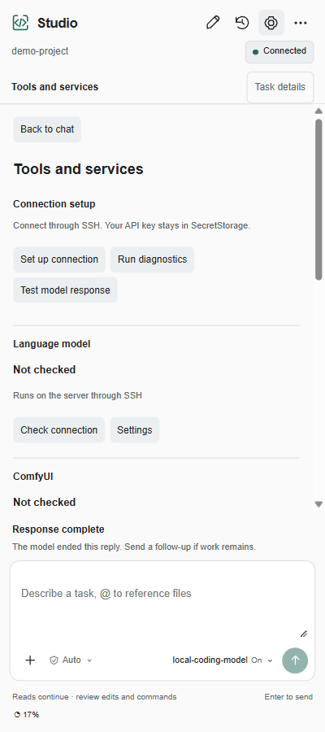

09 - Install Studio and Verify Your Model Connection#
Time: 35–50 minutes. Edition: November 25, 2026. Reference: Studio 0.14.1 development preview. Client: Windows, Linux or macOS desktop VS Code.
Labs 1–8 reconstruct the smaller Local Coding Assistant 0.3.0. Labs 9–13 use Studio 0.14.1, the implementation developed from that idea. Their extension IDs, settings and capabilities differ. Installing Studio does not add these features to the beginner reference’s source code.
Outcomes#
Install a verified preview, locate the machines doing inference and file operations, test a real model, and recognize unsupported capabilities before starting a coding task.
1. Download and inspect#
Download Studio 0.14 workshop kit and extract it:
Studio-0.14-Workshop/
macstudio-assistant-0.14.1-preview.vsix
install-preview.ps1
SHA256SUMS.txt
source/ # Version-pinned implementation
exercises/ # Disposable project and setup script
evidence-template.md
The kit is public and self-contained; no private-repository access is required. It contains no model weights, keys, personal configuration or real chat database. Keep source/ separate from the exercise folder the agent edits.
Windows PowerShell, inside the extracted folder:
Get-FileHash .\macstudio-assistant-0.14.1-preview.vsix -Algorithm SHA256
powershell -NoProfile -ExecutionPolicy Bypass -File .\install-preview.ps1
code --list-extensions --show-versions | Select-String 'macstudio-assistant'
The installer checks the pinned hash and installed version. The execution-policy override applies only to that process.
Linux Bash:
sha256sum macstudio-assistant-0.14.1-preview.vsix
code --install-extension macstudio-assistant-0.14.1-preview.vsix --force
code --list-extensions --show-versions | grep macstudio-assistant
macOS Terminal:
shasum -a 256 macstudio-assistant-0.14.1-preview.vsix
code --install-extension macstudio-assistant-0.14.1-preview.vsix --force
code --list-extensions --show-versions | grep macstudio-assistant
Expected package SHA-256（完整性校验）:
10058672ccbde08cca5632b59851ad9917ff50981e0c3a3918b4e846632079f6
Expected extension: yyang-local.macstudio-assistant@0.14.1. If code is unavailable, use Extensions → Install from VSIX. On macOS, the command palette offers Shell Command: Install ‘code’ command in PATH. Save work before Developer: Reload Window. This is a preview, not final 1.0.
2. Prepare the exercise#
From the extracted kit:
# Windows PowerShell
python exercises/make_fixture.py studio-demo
code studio-demo
# Linux / macOS
python3 exercises/make_fixture.py studio-demo
code studio-demo
The script refuses to overwrite an existing folder. Inspect math.cjs and math.test.cjs. The arithmetic test intentionally fails; do not fix it yet. Trust this disposable folder after reviewing its files.
3. Connect through SSH#
Studio uses an SSH bridge（SSH 桥接） with Python 3 and a POSIX login shell on the server, typically Linux or macOS. Mac Studio is one option. Windows, Linux and macOS clients are supported. For a native Windows model server without that bridge, use the beginner track’s local/tunnel route; the editions do not have identical transports.
Verify your own alias in a client terminal:
ssh model-server
Replace the alias with yours. Verify the fingerprint through a trusted source on first connection. Studio uses non-interactive SSH and never bypasses host-key checking; make key/SSH-agent login work first.
Open Studio → Settings (gear) → Set up connection:
Enter the SSH alias or
user@host.Enter an optional identity file and the server’s Python executable.
Enter the model’s loopback API URL on that server, for example
http://127.0.0.1:11436/v1.Enter your API key in the password field. It goes into SecretStorage（密钥存储）, not the webview.
Select an actual model ID reported by the server. The wizard probes the draft before saving. Cancelling before save preserves the old configuration.
The settings panel is also available under + → Tools and services. VS Code settings at the bottom opens the complete configuration.
Here 127.0.0.1 means the SSH server. Inference runs there; file reads, edits, diagnostics and approved commands run on the VS Code extension host, normally your client. With Remote-SSH, the extension-host location can differ. Verify the execution directory before approving a command.
4. Diagnose, then test a reply#
Click Run diagnostics: SSH/Python, API, model selection and optional capabilities are reported separately. Missing capability metadata is unreported, not evidence that a capability is unsupported. Test model response additionally sends a small completion without tools.


Fig. 1 Actual 0.14 webview renderer with synthetic service data. The gear opens these connection and tool controls. This browser fixture is not evidence of a live connection; run the diagnostic steps above on your own server.#
The model/thinking control sits beside Send. Use levels supported by the serving protocol: Qwen on/off templates and graded reasoning-effort APIs are different. A selected level is not proof the server honored it. Finish or cancel investigations before switching models, then reconnect and repeat a harmless tool task.
Direct mode pins a model ID. Changing another application’s default does not change it. A server can separately replace weights behind a stable alias.
5. Optional image exercise#
Attach a non-private PNG/JPEG with + → Attach image and request a description. This requires a working vision API path, not merely an installed projector file.
For generation, inspect your own ComfyUI service under Tools, then use + → Generate image. Review prompt, dimensions and model before submission. The built-in workflows target FLUX.2 Klein, not arbitrary graphs. Jobs and cached images persist locally. Image and language models can compete for server memory. This optional exercise was not revalidated by this edition’s text-only screenshot session.
Implementation and checks#
Trace src/experience-controller.js → src/transport.js → src/bridge.py. Locate draft settings, password storage, API probe, save and rollback. From source/:
# Windows
npm.cmd ci
node --test test/experience13.test.js
python test/bridge_test.py
# Linux / macOS
npm ci
node --test test/experience13.test.js
python3 test/bridge_test.py
Acceptance: record version, diagnostic outcomes and the observed test reply without username, address or key. Cancel setup once and confirm existing settings survived.
Quiz: Does an API probe prove reliable tool calling? Answer: No; later labs verify real tool dispatch and outcomes.